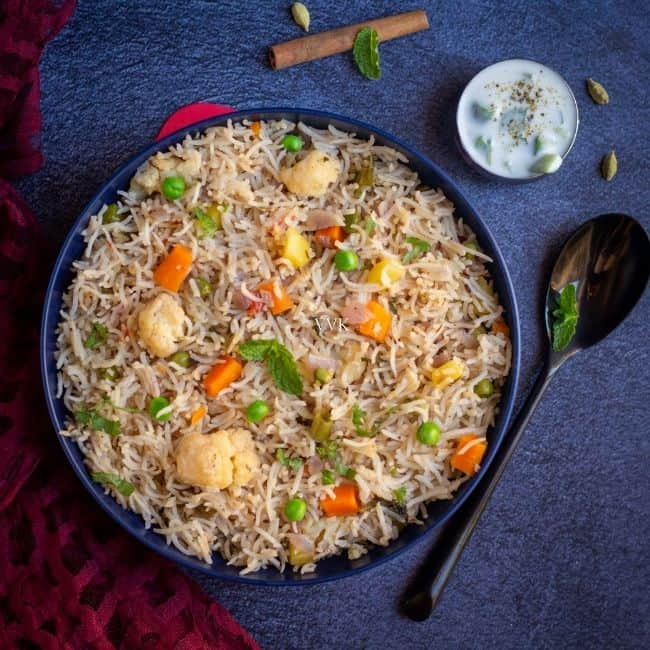

Veg Pulao
20 mins • One-pot meal • Budget-friendly
🌱Ingredients
- 2 cups cooked rice (preferably leftover or cooled)
- 1 cup mixed vegetables (carrot, beans, capsicum, peas, corn – finely chopped)
- 1 small onion (finely chopped)
- 2–3 garlic cloves (finely chopped)
- 1 green chili (optional, finely chopped)
- 2 tbsp oil (any cooking oil)
- 1 tbsp soy sauce
- 1 tsp vinegar (optional, for flavor)
- ½ tsp black pepper powder
- Salt to taste
- Spring onions (chopped, for garnish)
🳠Steps
- Heat oil in a wok/kadai on high flame
- Add garlic & chili, sauté for a few seconds until aromatic.
- Add onion → stir-fry for 1 min
- Add all vegetables → cook on high flame for 2–3 mins (they should stay crunchy).
- Add cooked rice, soy sauce, vinegar, pepper & salt.
- Toss everything on high flame for 2–3 mins.
- Garnish with spring onions and serve hot